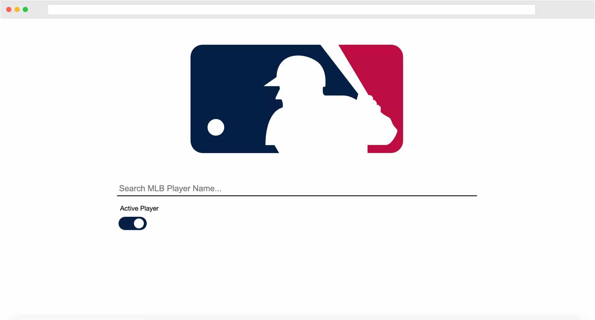

Web Development Projects
I built several side projects from scratch to sharpen the Front-End Web Design & Development skills.
MLB Data Dashboard
Develop a search engine to query MLB players' performance stats

User Story - Search UI HTMLCSSJavaScript
- Users can query a single player's information based on the player name.
- Users can choose to query the name of a currently active player or a resigned player.
- User can view player's personal information and career statistics in table format.
User Story - Dashboard UI MLB public APIAjaxD3.js
- User can view the player's data dashboard in the latest 5 active seasons' performance.
- User can click the Glossary button to see the metrics definition.
- User can filter the metrics to see different result in bar chart.
( *The red benchmark is player's career average per metrics per season. ) - User can click on the bars to view different season's outing ratio in the donut chart.
- User can filter to see different metrics comparison display on the line chart.
Movie Trailer Website
Build a movie trailer website by my all time favorite movies.

User Story HTMLCSSjQueryBootstrap
- Users can click the posters to see up to 15 movie trailers from Youtube.
- Users can view the movies' introduction and IMDB's rating.
- Users can find the movies by filtering the genres or searching the key words.
- Users can toggle the icon to view different version of trailers: The Official Trailer or the Honest Trailer ( Warning! Spoiler Alert ).
RGB Color Guessing Game
An interactive game allows users to get a better sense of the mechanism of color coding.

User Story HTMLCSSjQueryBootstrap
- Users will guess the color corresponds to the RGB value showed on the top banner.
- Users click on the blocks below the banner to guess the right color.
- Users can choose the game difficulty level by either the Easy or Hard mode.
- Users can restart the game by clicking the NEW COLORS button.
Simple Todo List
A static todo list project for users to track their assignments.
User Story HTMLCSSjQuery
- Users can add new tasks by typing task name and press 'enter/return' key.
- Users can cross over the finished tasks by clicking on the task names.
- Users can delete the task by hover over the tasks and click the red trash icon on the left.
- Users can show or hide the input section by toggling the icon on the top right corner.